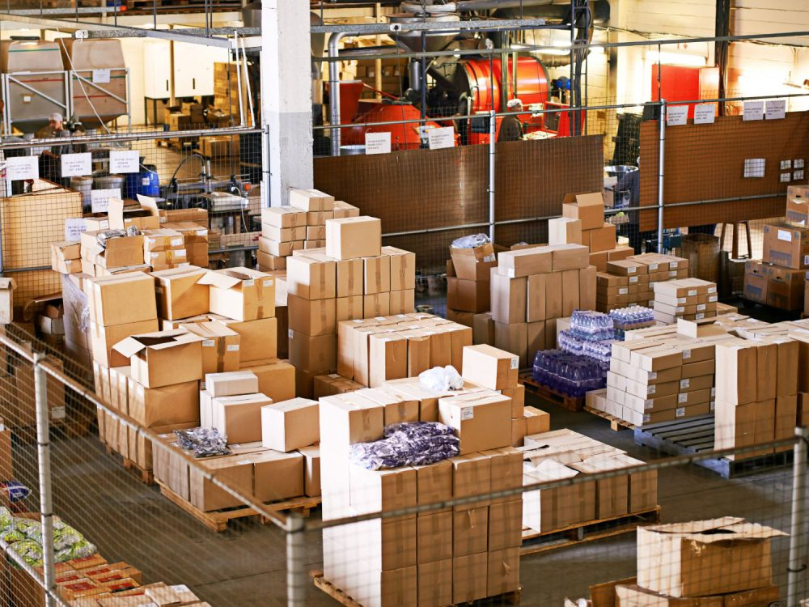

Qué es la Zona Franca La Plata
Un área aduanera especial donde la mercadería puede ingresar, almacenarse y reexpedirse con beneficios impositivos y operativos que no aplican en el territorio aduanero general.
Trade Up en la zona
Trade Up opera dentro de esta zona desde 1997, dando soporte a empresas que importan insumos, maquinaria o productos terminados, para su ingreso a la Argentina o para reenviarlos a otros destinos.
Beneficios
-
Comercial
Suspensión de aranceles e impuestos mientras la mercadería permanece en zona franca.
-
Industrial
Posibilidad de procesar o acondicionar mercadería antes de su destino final.
-
Servicios
Atención personalizada y respuesta rápida ante cada operación.

Historia
Sus comienzos
1907
El Congreso Nacional sancionó la ley 5142, que estableció una zona de libre comercio en el ámbito del puerto de La Plata.
Las empresas radicadas allí podrían operar en comercio exterior sin pagar derechos ni aranceles.
Fue una herramienta innovadora para el continente, pensada para conectar la incipiente producción del país con los mercados internacionales.
1991
El gobierno de la Provincia de Buenos Aires retomó esa iniciativa e impulsó su reglamentación y puesta en marcha.
1993
Se reglamentó la ley de principios de siglo.
Por el Decreto Provincial 4588/1993 se creó el Ente de Administración y Explotación de la Zona Franca de La Plata. Con este paso, la Provincia fue pionera en el desarrollo de las zonas francas argentinas.
1994
La ley 24331 dio a cada provincia la posibilidad de tener su propia zona franca.
1995
Se llamó a licitación pública nacional e internacional para la explotación de la Zona Franca La Plata (Decreto Provincial 1331/95).
1996
Se adjudicó la concesión por 25 años (Decreto Provincial 2067/96) y se tomó posesión de la zona franca.
La explotación continuó luego a cargo de Buenos Aires Zona Franca La Plata S.A.
1997
Trade Up construyó su primer depósito de 2.000 m² en la Zona Franca La Plata.
Hoy
Una realidad en pleno crecimiento
Lo que empezó como una ley de 1907 es hoy una realidad en pleno crecimiento.
¿Listo para operar en zona franca?
Revisá qué documentación necesitás o hablá con el equipo.